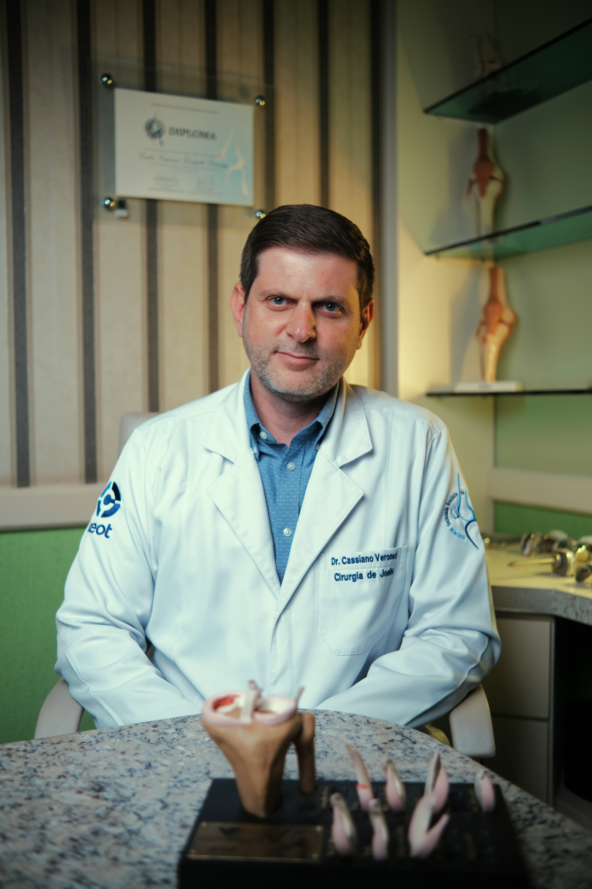

O Dr. Cassiano Veronezi une tecnologia avançada e tratamento humanizado para cuidar da saúde do seu joelho, devolvendo o bem-estar que você merece.
Satisfação
+500 Pacientes Felizes
CRM-PR 27666 | RQE 18908
Não ignore as dores que limitam seu dia a dia. Identificar o problema cedo é a chave para uma recuperação mais rápida e menos invasiva.
Sente que o joelho "falha" ou escuta estalos acompanhados de dor? Isso pode indicar lesões de ligamento (LCA) ou menisco.
Rigidez matinal ou dificuldade para subir e descer escadas são sinais comuns de artrose ou processos degenerativos.
Dores agudas após atividades físicas ou entorses necessitam de avaliação imediata para evitar agravamento da lesão.
Procedimento para restaurar a estabilidade do joelho em pacientes com rompimento do Ligamento Cruzado Anterior.
Substituição articular (Artroplastia) para casos de artrose severa, devolvendo a qualidade de vida e mobilidade.
Sutura meniscal e meniscectomia preservadora através de vídeo (Artroscopia) com rápida recuperação.
Viscossuplementação para lubrificar a articulação e reduzir dores causadas pelo desgaste da cartilagem.
Correção do alinhamento ósseo para aliviar a pressão em áreas desgastadas do joelho, prevenindo a artrose.
Tratamento e correção cirúrgica para luxações recorrentes da rótula (patela).

O Dr. Cassiano Veronezi (CRM-PR 27666 / RQE 18908) é médico Ortopedista e Traumatologista, especialista em Cirurgia do Joelho com atuação em Toledo e Cascavel, PR.
Membro Titular da Sociedade Brasileira de Ortopedia e Traumatologia (SBOT) e da Sociedade Brasileira de Cirurgia do Joelho (SBCJ), o Dr. Cassiano une o rigor acadêmico como Preceptor de Residência Médica à prática clínica avançada.
A maior satisfação do Dr. Cassiano é ver seus pacientes retomando suas atividades favoritas sem limitações.
"Fiz a cirurgia de LCA com o Dr. Cassiano e a recuperação foi surpreendente. Em poucos meses já estava voltando a treinar com total segurança. Um profissional humano e extremamente técnico."
Ricardo Mendes
Atleta Amador
"Depois de anos sofrendo com artrose no joelho, a cirurgia de prótese mudou minha vida. Voltei a caminhar sem dor e a brincar com meus netos. Gratidão eterna ao Dr. Cassiano."
Maria Silveira
Aposentada
"Excelente atendimento desde a primeira consulta. O Dr. explicou todo o diagnóstico de menisco com calma e me deu segurança para o tratamento. Recomendo muito!"
João Pedro Lima
Empresário
Preparamos respostas para as perguntas mais comuns de nossos pacientes.